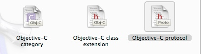

一、BOLCK
（一）简介
BLOCK是什么？苹果推荐的类型，效率高，在运行中保存代码。用来封装和保存代码，有点像函数，BLOCK可以在任何时候执行。
BOLCK和函数的相似性：（1）可以保存代码（2）有返回值（3）有形参（4）调用方式一样。
标识符^
void (^MYBlock)(int) = ^(int n)
{
for (int i = 0 ; i < n; i++)
{
NSLog(@"-----------------------");
}
};
MYBlock(5);
NSLog(@"----------结束-----------");
// 打印结果
2016-07-30 19:03:05.742 test[1928:729541] -----------------------
2016-07-30 19:03:05.743 test[1928:729541] -----------------------
2016-07-30 19:03:05.743 test[1928:729541] -----------------------
2016-07-30 19:03:05.743 test[1928:729541] -----------------------
2016-07-30 19:03:05.743 test[1928:729541] -----------------------
2016-07-30 19:03:05.743 test[1928:729541] ----------结束-----------
（二）基本使用
（1）定义BLOCK变量
int (^SumBlock)(int,int);//有参数，返回值类型为int
void (^MyBlock)()；//无参数，返回值类型为空
（2）利用block封装代码
// 利用block封装代码
// 1. 接受两个参数的
int (^Myblock1)(int, int) = ^(int a, int b)
{
return a + b;
};
// 2. 无参数形式
int (^Myblock2)()=^()
{
return 10;
};
// 无参数的省形式
int (^Myblock3)() = ^
{
return 10;
};
（3）Block访问外部变量
- Block内部可以访问外部变量；
- 默认情况下，Block内部不能修改外部的局部变量
- 给局部变量加上__block关键字，则这个局部变量可以在block内部进行修改。
(4）利用typedef定义block类型(和指向函数的指针很像)
Typedef int(^MyBlock)(int ,int);
//以后就可以利用这种类型来定义block变量了。
MyBlock a,b;
a=^(int a,int b){return a-b;};
MyBlock b2=^(int n1,int n2){return n1*n2;};
二、Protocol（协议
（一）简介
- Protocol：就一个用途，用来声明一大堆的方法（不能声明成员变量），不能写实现。
- 只要某个类遵守了这个协议，就拥有了这个协议中的所有方法声明。
- 只要父类遵守了某个协议，那么子类也遵守。
- Protocol声明的方法可以让任何类去实现，protocol就是协议。
- OC不能继承多个类（单继承）但是能够遵守多个协议。继承(:)，遵守协议（< >）
- 基协议：是基协议，是最根本最基本的协议，其中声明了很多最基本的方法。
- 协议可以遵守协议，一个协议遵守了另一个协议，就可以拥有另一份协议中的方法声明。
（二）基本使用

创建一个协议
// MyProtocol协议，这个协议遵守基协议<NSObject>
@protocol MyProtocol <NSObject>
// 在协议中可以声明很多有用的方法
// @Property int age; 在协议中不能声明成员变量，只能声明方法，也不能实现方法。
@required
// @required 关键字，主要用于程序之间的交流，要求实现
- (void)pint;
- (void)haha;
@end
遵守协议
// 在类的声明中加入协议的头文件
import "MyProtocol.h"
// Person 类的声明，这个类继承了 NSObject类，遵守 MyProtocol 协议
@interface Person : NSObject <MyProtocol>
@end
完成协议中声明的方法的实现
/// Person类的实现
@implementation Person
// 在这里进行遵守的协议里所声明方法的实现
- (void)pint
{
NSLog(@"小明");
}
- (void)haha
{
NSLog(@"haha@");
}
@end
测试程序
Person *p = [[Person alloc] init];
// Person 类对象，调用协议中的方法
[p pint];
[p haha];
// 打印结果
2016-07-30 19:27:08.553 test[2188:802815] 小明
2016-07-30 19:27:08.553 test[2188:802815] haha@
1. 协议的定义
@protocol 协议名称 <NSObject>
//方法声明列表
@end;
2. 如何遵守协议
类遵守协议
@protocol //类名：父类名 <协议名称1，协议名称2>
@end
协议遵守协议
@protocol //协议名称 <其他协议名称>
@end;
3. 协议方法声明中的关键字
（1）required （默认）要求实现，若没有实现则警告但不报错
（2）Optional 不要求实现
4. 定义变量时遵守协议的限制
类名<协议名称> *变量名 NSObject<.Myprotocol> *obj;
id <协议名称> 变量名 id <.Myprotocol> obj1;
5. Property中声明的属性也可以做遵守协议的限制
@property (nonatomic ,strong ) 类名<协议名称> *属性名;
@property (nonatomic ,strong ) id<协议名称> 属性名;
6. 补充知识：
协议本身写在.h头文件中，但也可以定义在任何地方。当这个协议只有这个类使用遵守时，一般把协议写在这个类里边，当这个协议需要多个类去实现时，就写在外边单独的文件中。